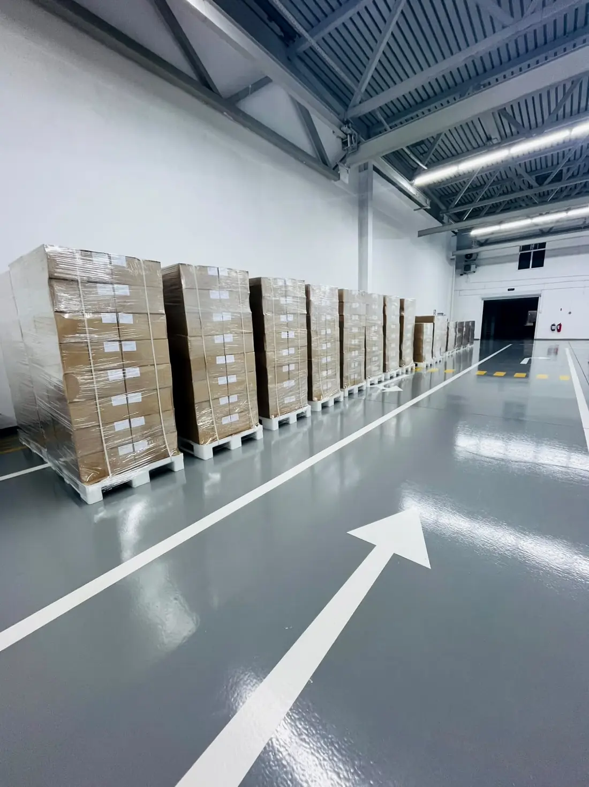
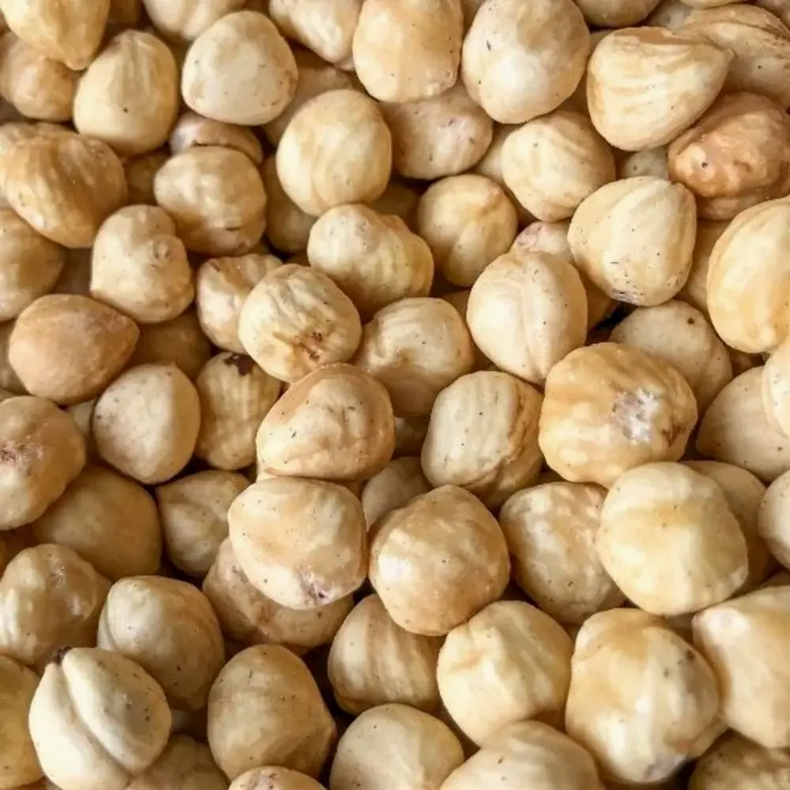

Integrated from orchard to shipment
Because we grow, process and pack our own hazelnuts, every stage is managed by our own team, with controls that protect quality, safety and consistency for our customers.
Four production stages
From blossom to container in four controlled stages

Cultivation & Harvest
Our 500+ hectares of orchards in Gabala are managed by agronomists with more than 20 years of hazelnut experience, following ecological production practices. Nuts are harvested at optimal maturity.

Processing
Cracking, sorting, calibration, blanching, roasting, chopping and milling are carried out in our modern facility, with a processing capacity of more than 20 tons per day.

Quality Control
Every lot is tested in our in-house laboratory for moisture and quality parameters, and finished products pass through metal detection before packing.

Packaging & Export
Products are packed in vacuum bags, paper bags, PP bags, big bags or retail packs, palletised and shipped as FCL or LCL loads to customers worldwide.
Six controls behind every shipment
Our food safety management system is certified to FSSC 22000 and ISO 22000:2018.
In-House Laboratory
Moisture, size and quality parameters are tested on site for every production lot.
Metal Detection
Finished products pass through metal detection before packing.
Raw Material Inspection
Incoming nuts are inspected and graded before entering production.
Production Monitoring
Critical process parameters are monitored and recorded at each stage.
Finished Product Inspection
Each batch is checked against its specification before release.
Traceability
Every lot can be traced from orchard to shipment.


Looking for a reliable hazelnut supplier?
Tell us your product, specification and volume. Our sales team will reply with availability and a tailored offer.